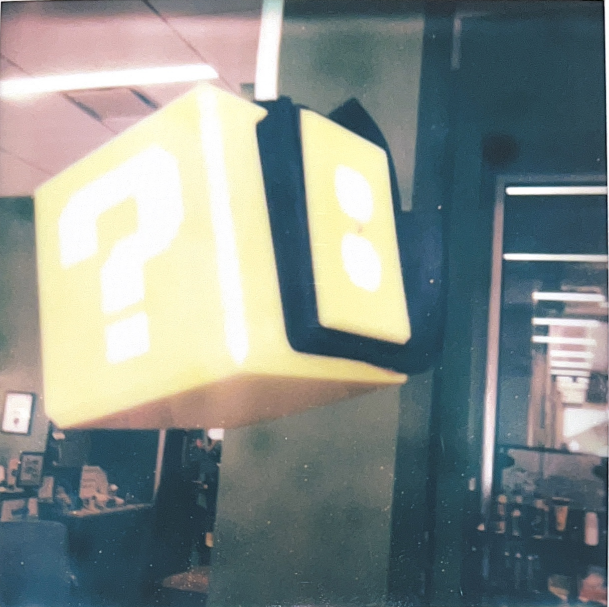
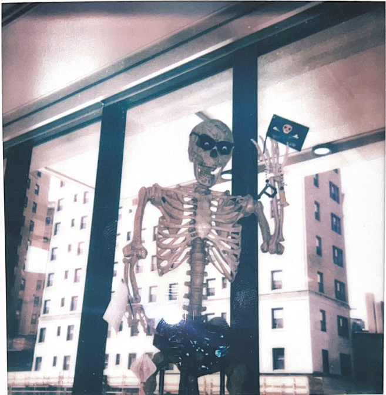
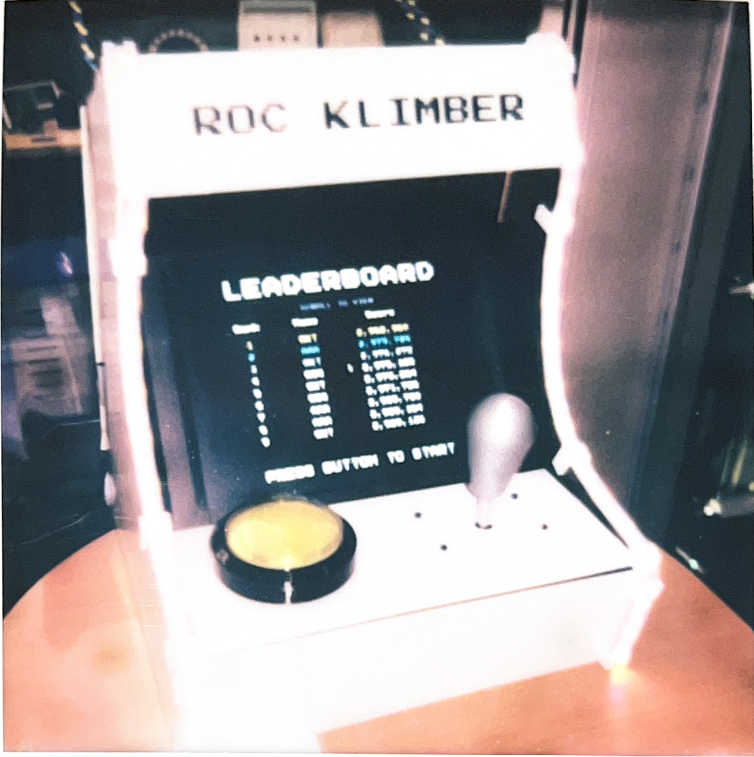

Imperian began humbly with the amazing success of Post It! the beloved PC game that inspired players around the world to question who makes the rules in society – and we’re proud to say it was pretty fun too.
Off of that success, Imperian began to move from game development to social media since we had become known as THE company that really understood how we speak to each other on the internet. Due to our recent hit, we created Play On! a game-based social media site where users could easily share clips, graphics, and discuss opinions on games from any source.


In the process of putting Play On! together, we realized that to make this work we would need to improve the quality and efficiency of file transfers over the web. As a result we took it upon ourselves to create Paper Stream–our compression engine that revitalized the speed and quality of audio/video file transfer.
This clearly wasn’t enough for our lofty ambitions so we are now embarking on our biggest venture yet – Para-Sight!

